With special contributions from Juan Gómez-Luna
This chapter introduces CUDA dynamic parallelism, an extension to the CUDA programming model that enables a CUDA kernel to create more thread grids by calling other kernels. Dynamic parallelism allows algorithms that dynamically discover new work to prepare and launch grids without burdening the host or resorting to complex software techniques. The chapter starts with a simple pattern that benefits from dynamic parallelism. It then uses two advanced examples, Bezier Curve calculation and Quad Tree construction, to illustrate some of the important subtleties and details that programmers will likely encounter when using dynamic parallelism in real applications. It ends with important considerations regarding the practical use of dynamic parallelism, including memory data visibility, pending launch pool configuration, streams, and nesting depth.
Dynamic work discovery; irregular work distribution; time-space work variation; grid launch; streams; synchronization; recursive kernel calls
CUDA dynamic parallelism is an extension to the CUDA programming model that enables a kernel to call other kernels, thereby allowing threads executing on the device to launch new grids of threads. In early versions of CUDA, grids could be launched only from the host code. Algorithms that involved recursion, irregular loop structures, time-space variation, or other constructs that do not fit a flat and single level of parallelism needed to be implemented with multiple kernel calls from the host, which increases the burden on the host, the amount of host-device communication, and the total execution time. In some cases, programmers resort to loop serialization and other awkward techniques to support these algorithmic needs at the cost of software maintainability. The support for dynamic parallelism allows algorithms that dynamically discover new work to prepare and launch new grids without burdening the host or impacting the software maintainability. This chapter describes the extended capabilities of CUDA that enable dynamic parallelism, including the modifications and additions to the CUDA programming interface, as well as guidelines and best practices for exploiting this added capacity.
Many real-world applications employ algorithms that have either a variation of work across space or a dynamically varying amount of work performed over time. For example, Fig. 21.1 shows a turbulence simulation example in which the level of required modeling details varies across both space and time. As the combustion flow moves from left to right, the range of activities and intensity increases. The level of details required to model the right side of the model is much higher than that for the left side of the model. On one hand, using a fixed fine grid would incur too much work for no gain for the left side of the model. On the other hand, using a fixed coarse grid would sacrifice too much accuracy for the right side of the model. Ideally, one should use fine grids for the parts of the model that require more details and coarse grids for the parts that do not.
Thus far, we have assumed that all kernels are called from the host code. The amount of work done by a thread grid is predetermined in calling the kernel function. With the single-program, multiple-data programming style for the kernel code, it is tedious if not extremely difficult to have thread blocks use different grid spacing. As a result, this limitation favors the use of a fixed and uniform (regular) grid system. To achieve the desired accuracy, such a fixed grid approach, as illustrated in the upper right portion of Fig. 21.1, typically needs to accommodate the most demanding parts of the model and maintain unnecessary extra data as well as perform unnecessary extra work in parts that do not require as much detail.
A more desirable approach is shown as the dynamic grid in the lower right portion of Fig. 21.1. As the simulation algorithm detects fast-changing simulation quantities in some areas of the model, it refines the grid in those areas to achieve the desired level of accuracy. Such refinement does not need to be done for the areas that do not exhibit such intensive activity. Thus the algorithm can dynamically direct more computational resources to the areas of the model that benefit from additional work.
Fig. 21.2 shows a conceptual comparison of behavior between a system without dynamic parallelism and another one with dynamic parallelism with respect to the simulation model in Fig. 21.1. Without dynamic parallelism the host thread must launch all grids. If new work is discovered, such as refining an area in the model during the execution of a grid, the grid needs to terminate, report back to the host, and have the host launch new grids. This is illustrated in Fig. 21.2A, in which the host launches a grid, receives information from this grid after its termination, and launches subsequent grids for any new work that is discovered by the completed grid. The figure depicts the subsequent grids as being launched one after the other; however, sophisticated optimizations may be applied, such as launching independent grids in different streams or combining them so that they can run in parallel.
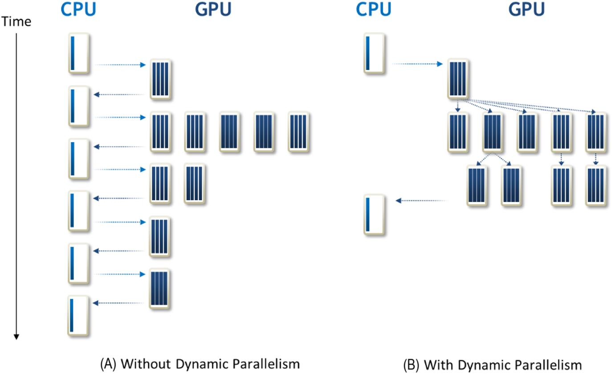
Fig. 21.2B shows that with dynamic parallelism the threads that discover new work can just go ahead and launch grids to do the work. In our example, when a thread discovers that an area in the model needs to be refined, it can launch a new grid to perform the computation on the refined area without the overhead of terminating the grid, reporting back to the host, and having the host launch the new grid.
From the perspective of programmers, dynamic parallelism means that they can write a statement within a kernel that calls another kernel function. In Fig. 21.3 the main function (host code) launches three kernels: A, B, and C. These are kernel calls in the host code, as we have been assuming throughout this book. What is new in Fig. 21.3 is that one of the kernels, B, calls three kernels X, Y, and Z. This would have been illegal in early CUDA systems that do not support dynamic parallelism.
The syntax for calling a kernel from inside of a kernel is the same as that for calling a kernel from the host code:
To demonstrate how dynamic parallelism can be used, we provide simple examples of kernels without and with dynamic parallelism. The examples are based on a hypothetical parallel algorithm that does not compute useful results but provides a conceptually simple computational pattern that recurs in many applications. It serves to illustrate the difference between the two approaches and how one can use the dynamic parallelism to extract more parallelism while reducing control flow divergence when the amount of work done by each thread in an algorithm can vary dynamically.
Fig. 21.4 shows a simple example kernel coded without dynamic parallelism. In this example, each thread of the kernel performs some computation (line 05), then loops over a list of data elements for which it is responsible (line 07), and performs another computation for each data element (line 08).
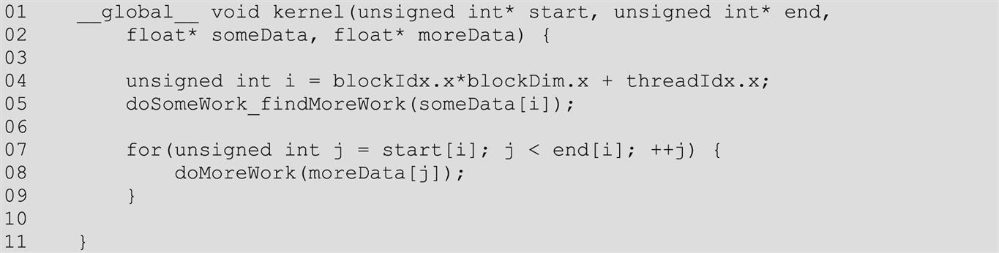
This computation pattern recurs frequently in many applications. For example, in graph search, each thread could visit a vertex and then loop over a list of neighboring vertices. The reader should find this kernel structure similar to that of the vertex-centric BFS kernel in Figure 15.14. For another example, in sparse matrix computations, each thread could first identify the starting location of a row of nonzero elements and loop over the nonzero values. In simulations such as the example at the beginning of this chapter, each thread could first process a coarse grid element and then loop over finer grid elements if there is a need for refining the grid.
There are two main problems with writing applications in the style shown in Fig. 21.4. First, if the work in the loop (lines 07–09) can be profitably performed in parallel, then we have missed out on an opportunity to extract more parallelism from the application. Second, if the number of iterations in the loop varies significantly between threads in the same warp, then the resulting control divergence can degrade the performance of the program.
Fig. 21.5 shows a version of the same program that uses dynamic parallelism. In this version the original kernel is separated into two: a parent kernel and a child kernel. The parent kernel starts off the same as the original kernel, executed by a grid of threads that are referred to as the parent grid. Instead of looping, the parent kernel calls a child kernel to continue the work (lines 07–08). The child kernel is executed by grids of threads called the child grids, which perform the work (line 18, Fig. 21.5) that was originally performed inside the loop body (lines 07–09, Fig. 21.4).
Writing the program in this way addresses both problems that were mentioned about the original code. First, the loop iterations are now executed in parallel by the child kernel threads instead of serially by the original kernel thread. Thus we have extracted more parallelism from the program. Second, each thread now executes a single loop iteration, which results in better load balance and eliminates control divergence. Although these two goals could have been achieved by the programmer rewriting the kernels differently, for example, by using an edge-centric breadth-first implementation, such transformations for some applications can be awkward, complicated, and error prone. Dynamic parallelism provides an easy way to express such computational patterns.
We now show an example that is a more interesting and useful case: the adaptive subdivision of spline curves. This example illustrates the case of having a variable amount of child grid launches, according to the workload. The example is to calculate Bezier curves (Bezier Curves), which are frequently used in computer graphics to draw smooth, intuitive curves that are defined by a set of control points, which are typically defined by a user.
Mathematically, a Bezier curve is defined by a set of control points P0 through Pn, where n is called the control point’s order (n=1 for linear, 2 for quadratic, 3 for cubic, etc.). The first and last control points are always the end points of the curve; however, the intermediate control points (if any) generally do not lie on the curve.
Given two control points P0 and P1, a linear Bezier curve is simply a straight line connecting these two points. The coordinates of the points on the curve are given by the following linear interpolation formula:
A quadratic Bezier curve is defined by three control points P0, P1, and P2. The points on a quadratic curve are defined as a linear interpolation of corresponding points on the linear Bezier curves from P0 to P1 and from P1 to P2. The calculation of the coordinates of points on the curve is expressed by the following formula:
which can be simplified into the following formula:
Fig. 21.6 shows part of a CUDA C program that calculates the coordinates of points on a Bezier curve. The computeBezierLines kernel starting at line 13 is designed to use a block to calculate the curve points for a set of three control points (of the quadratic Bezier formula). Each thread block first computes a measure of the curvature of the curve defined by the three control points. Intuitively, the larger the curvature, the more points it takes to draw a smooth quadratic Bezier curve for the three control points. This defines the amount of work to be done by each block. This is reflected in lines 20 and 21, in which the total number of points to be calculated by the current thread block is proportional to the curvature value.
In the for-loop in line 24, all threads calculate a consecutive set of Bezier curve points in each iteration. The detailed calculation in the loop body is based on the formula that we presented earlier. The key point is that the number of iterations taken by threads in a block can be very different from the number taken by threads in another block. Depending on the scheduling policy, such variation of the amount of work done by each thread block can result in decreased utilization of streaming multiprocessors (SMs) and thus reduced performance.
Fig. 21.7 shows a Bezier curve calculation code using dynamic parallelism. It breaks the computeBezierLines kernel in Fig. 21.6 into two kernels. The first part, computeBezierLines_parent, discovers the amount of work to be done for each control point. The second part, computeBezierLines_child, performs the calculation.
With the new organization the amount of work that is done for each set of control points by the computeBezierLines_parent kernel is much smaller than that for the original computeBezierLines kernel. Therefore we use one thread to do this work in computeBezierLines_parent rather than using one block in computeBezierLines. In line 58, we need to launch only one thread per set of control points. This is reflected by dividing the N_LINES by BLOCK_DIM to form the number of blocks in the kernel launch configuration.
There are two key differences between the computeBezierLines_parent kernel and the computeBezierLines kernel. First, the index that is used to access the control points is formed on a thread basis (line 08 in Fig. 21.7) rather than a block basis (line 14 in Fig. 21.6). This is because the work for each control point is done by a thread rather than a block, as we mentioned earlier in the chapter. Second, the memory for storing the calculated Bezier curve points is dynamically determined and allocated in line 15 in Fig. 21.7. This allows the code to assign just enough memory to each set of control points to be placed in the bLines variable. Note that in Fig. 21.6, each BezierLine element is declared with the maximum possible number of points (line 09). On the other hand, the declaration in Fig. 21.7 has only a pointer to a dynamically allocated storage. Allowing a kernel to call the cudaMalloc() function can lead to substantial reduction of memory usage for situations in which the curvature of control points varies significantly.
Once a thread of the computeBezierLines_parent kernel has determined the amount of work needed by its set of control points, it calls the computeBezierLines_child kernel and launches a child grid to do the work (line 19 in Fig. 21.7). In our example, every thread from the parent grid creates a new grid for its assigned set of control points. This way, the work that is done by each thread block is balanced. The amount of work that is done by each child grid varies.
Dynamic parallelism kernel calls have the same asynchronous semantics as kernel calls from the host. That is, once the child kernel has been called, the parent thread that called it may proceed to execute the subsequent code without waiting for the child grid to complete. If the parent thread wishes to wait for its child grid to complete, it must perform an explicit synchronization similar to what a host thread would do. If no explicit synchronization is made, then the thread can finish executing, but there is an implicit synchronization at the end. The implicit synchronization ensures that all child grids have terminated before the parent grid terminates. We refer the reader to the CUDA C++ Programming Guide for more details about the semantics of parent-child grid synchronization (NVIDIA Corporation, 2021).
After computeBezierLines_parent terminates, the memory allocated inside the kernel using cudaMalloc still needs to be freed. For this reason, an additional kernel freeVertexMem is implemented (lines 42–47) to be called by the host. This kernel frees all storage allocated to the vertices in the bLines_d data structure in parallel (line 61). This kernel is necessary because vertex storage allocated on the device by a device kernel has to be freed by a device kernel. We refer the reader to the CUDA C++ Programming Guide for more details about the use of cudaMalloc and cudaFree on the device (NVIDIA Corporation, 2021).
Dynamic parallelism also allows programmers to implement recursive algorithms. In this section we illustrate the use of dynamic parallelism for implementing recursion with a quadtree (Finkel and Bentley, 1974). Quadtrees partition a two-dimensional space by recursively subdividing it into four equally sized quadrants. Each quadrant is considered to be a node of the quadtree and contains a number of points. If the number of points in a quadrant is greater than a fixed minimum, the quadrant will be recursively subdivided into four more quadrants, that is, four child nodes.
Fig. 21.8 illustrates the construction of a quadtree with dynamic parallelism. In this implementation, one node (quadrant) is assigned to one block. Initially (depth=0), one block (block 0) is assigned the entire two-dimensional space (root node of the quadtree), which contains all points. It divides the space into four quadrants and launches one block for each quadrant (depth=1). These child blocks (blocks 00 through 03) will again subdivide their quadrants if they contain more points than a fixed minimum. In this example we assume that the minimum is two; thus blocks 00 and 02 do not launch children. Blocks 01 and 03 launch a grid with four blocks each.
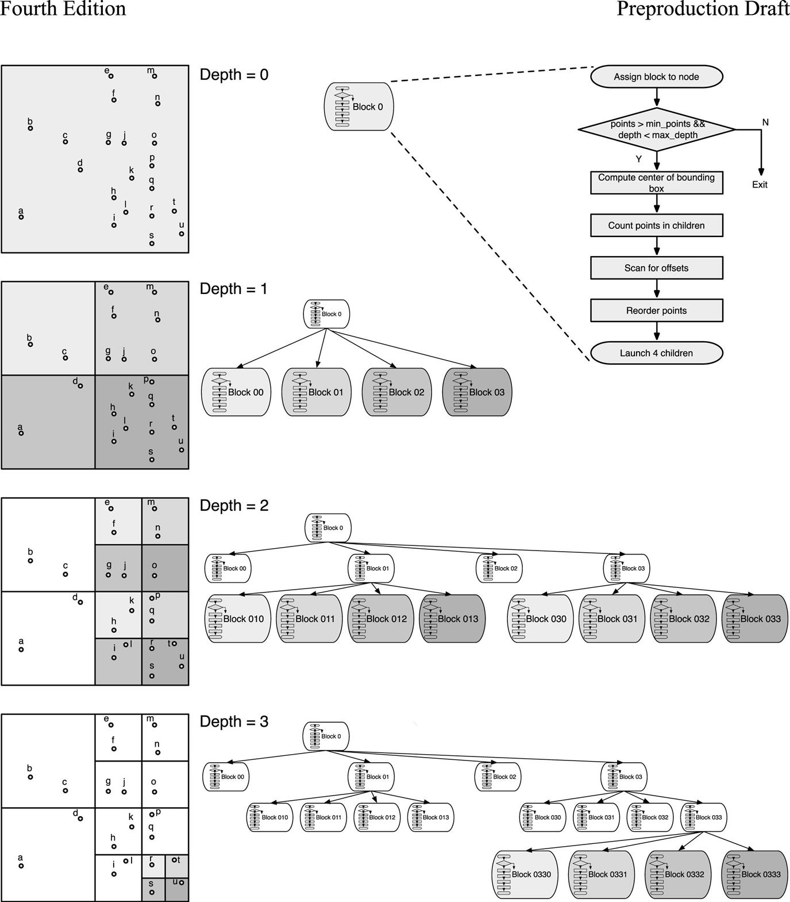
As the flow graph in the right-hand side of Fig. 21.8 shows, a block first checks whether the number of points in its quadrant is greater than the minimum required for further division and whether the maximum depth has not been reached. If either of the conditions fails, the work for the quadrant is complete, and the block returns. Otherwise, the block computes the center of the bounding box that surrounds its quadrant. The center is in the middle of four new quadrants. The number of points in each of them is counted. A four-element scan operation is used to compute the offsets to the locations where the points will be stored. Then the points are reordered so that those points in the same quadrant are grouped together and placed into their section of the point storage. Finally, the block launches a child grid with four blocks, one for each of the four new quadrants.
Fig. 21.9 continues the small example in Fig. 21.8 and illustrates in detail how the points are reordered at each level of depth. For the example we assume that each quadrant must have more than two points to be further divided. The algorithm uses two buffers to store the points and reorder them. The points should be in buffer 0 at the end of the algorithm. Thus it might be necessary to swap the buffer contents before leaving if the points are in buffer 1 when the terminating condition is met.
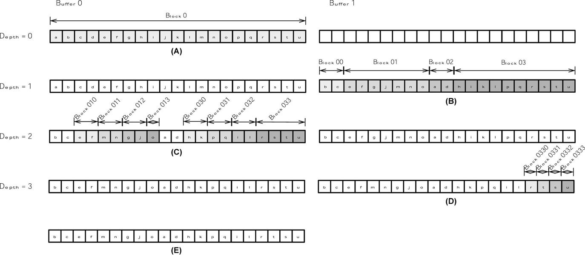
In the initial kernel call from the host code (for depth=0), block 0 is assigned all the points that reside in buffer 0, shown in Fig. 21.9A. Block 0 further divides the quadrant into four child quadrants, groups together all points in the same child quadrant, and stores the points according to the quadrants into buffer 1, as shown in Fig. 21.9B. Its four children, block 00 to block 03, are assigned each of the four new quadrants, shown as marked ranges in Fig. 21.9B. Blocks 00 and 02 will not launch children, since the number of points in their respective assigned quadrant is only 2. Blocks 01 and 03 reorder their points to group those in the same quadrant and launch four child blocks each, as shown in Fig. 21.9C. Blocks 010, 011, 012, 013, 030, 031, and 032 do not launch children (they have two or fewer points) and do not need to swap points (they are already in buffer 0). Only block 033 reorders its points and launches four blocks, as shown in Fig. 21.9D. Blocks 0330 to 0333 will exit after swapping their points to buffer 0, which can be seen in Fig. 21.9E.
The kernel code in Fig. 21.10 implements the flow graph from Fig. 21.8. The quadtree is implemented with a node array, in which each element contains all the pertinent information for one node of the quadtree (definition given in Appendix A21.1). As the quadtree is constructed, new nodes will be created and placed into the array during the execution of the kernels. The kernel code assumes that the node parameter points to the next available location in the node array.
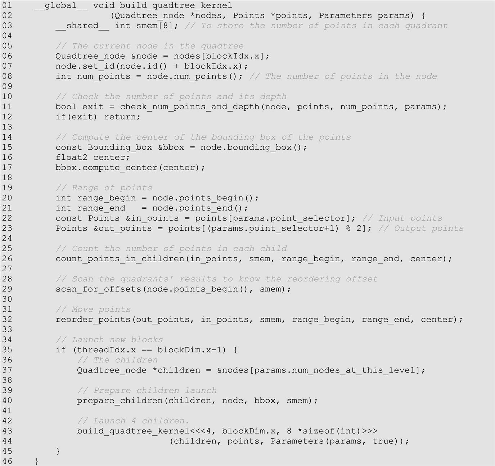
Every block starts by checking the number of points in its node (quadrant). A point is a pair of floats representing x and y coordinates (definition in Appendix A21.1). If the number of points is less than or equal to the minimum or if the maximum depth is reached (line 11), the block will exit. The maximum depth may be specified on the basis of application requirements or hardware constraints (see Section 12.5). Before exiting, the block may need to write its points from buffer 1 to buffer 0 if necessary. This is because the output is expected in buffer 0 after the quadtree is complete. The transfer of points from buffer 1 to buffer 0 is done in the device function check_num_points_and_depth() shown in Fig. 21.11.
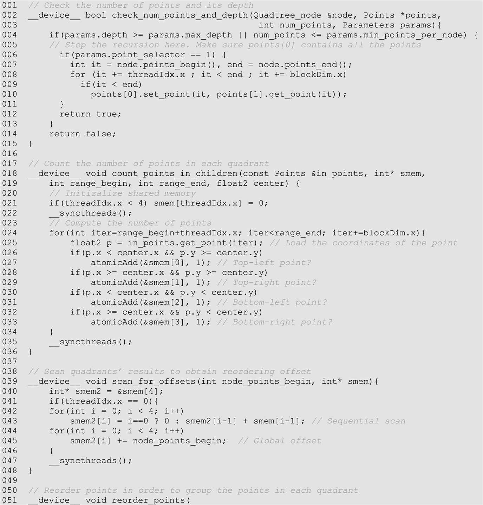
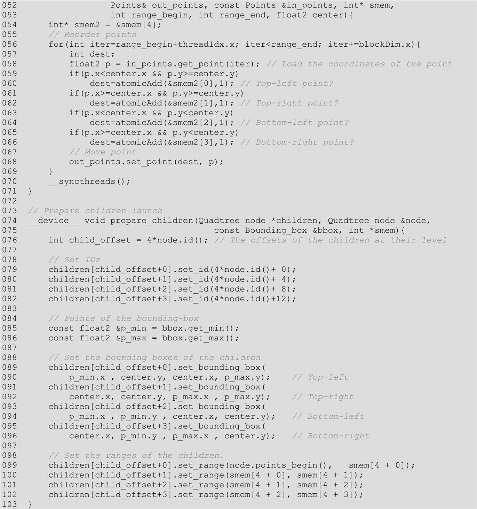
Next, the center of the bounding box is computed (line 17). A bounding box is defined by its top-left and bottom-right corners. The coordinates of the top-left and the bottom-right corner points of the bounding box for the current node are given as part of the node data by the caller. The coordinates of the center are computed as the coordinates of the middle point between these two corner points. The definition of a bounding box (including function compute_center()) is given in Appendix A21.1.
As the center separates the four quadrants, one can determine which quadrant each point in the current node belongs to by comparing it with the center point. The number of points in each quadrant are counted (line 26). The device function count_points_in_children() can be found in Fig. 21.11. These are simplified for clarity reasons. The threads of the block collaboratively go through the range of points and use atomic operations to update the counters in shared memory for each quadrant.
The device function scan_for_offsets() is called then (line 29). As can be seen in Fig. 21.11, it performs a scan on the four counters in shared memory. Then it adds the global offset of the parent quadrant to these values to derive the starting offset for each quadrant’s group in the buffer.
Using the quadrants’ offsets, the points are reordered with reorder_points() (line 32). For simplicity this device function (Fig. 21.11) uses an atomic operation on one of the four quadrant counters to derive the location for placing each point.
Finally, the last thread of the block (line 35) determines the next available location in the node array for children nodes (line 37), prepares the new node contents for the child quadrants (line 40), and launches one child kernel with four thread blocks (line 43). The device function prepare_children() prepares the new node contents for the children by setting the limits of the children’s bounding boxes and the range of points in each quadrant. The prepare_children() function can be found in Figure 13.14 (line 75).
The rest of the definitions can be found in Appendix A21.1.
In this section we will briefly explain some important considerations for the execution behavior of programs that use dynamic parallelism. It is important for a programmer to understand these considerations well in order to use dynamic parallelism confidently.
When a parent thread passes a memory pointer to a child grid, it must ensure that the memory being pointed to is accessible to the child grid so that the child grid does not attempt to access invalid memory. The memory that can be accessed by both parent threads and their child grids includes global memory, constant memory, and texture memory. A parent thread should not pass pointers to local memory or shared memory to their child grids because local memory and shared memory are private to the thread and the thread block, respectively.
Besides ensuring that the memory that is passed by the parent thread to the child grid is accessible to the child grid, programmers must also be aware of when the data written to that memory by a parent thread will be visible to the child grid and vice versa. There are two points in the execution at which the parent thread and the child grid have the same view of memory: when the parent thread launches the child grid and when the child grid completes as signaled by the completion of a synchronization API call by the parent thread. In other words, when a parent thread launches a child grid, any updates to memory prior to that launch will be seen by the child grid, but there is no such guarantee for updates after that launch. Also, there is no guarantee that any updates to memory made by the child grid will be visible to the parent thread until after the parent thread has synchronized on the completion of the child grid.
We refer the reader to the CUDA C++ Programming Guide for more details about memory and data visibility between parent threads and child grids (NVIDIA Corporation, 2021).
The pending launch pool is a buffer that tracks the kernels that are executing or waiting to be executed. This pool is allocated a fixed amount of space, thereby supporting a fixed number of pending kernel calls (2048 by default). If this number is exceeded, a virtualized pool is used, leading to a significant slowdown, which can be an order of magnitude or more. To avoid this slowdown, the programmer can increase the size of the fixed pool by executing the cudaDeviceSetLimit() API call from the host function to set the cudaLimitDevRuntimePendingLaunchCount configuration.
For example, in the Bezier curve calculation in Section 21.3, if N_LINES is set to 4096, then 4096 child grids will be launched, so half of the launches will use the virtualized pool. This will incur a significant performance penalty. However, if the fixed-size pool is set to 4096, the execution time will be reduced substantially.
As a general recommendation, the size of the fixed-size pool should be set to the expected number of launched grids (if it exceeds the default size). In the Bezier curves example we would call cudaDeviceSetLimit(cudaLimitDevRuntimePendingLaunchCount, N_LINES) before calling the computeBezierLines_parent() kernel.
Just as host code can use streams to execute kernels concurrently, device threads can use streams in launching grids with dynamic parallelism. The scope of a stream is private to the block in which the stream was created. When a stream is not specified in a kernel call, the default NULL stream in the block is used by all threads. This means that all grids that are launched in the same block will be serialized even if they were launched by different threads. However, it is often the case that grids launched by different threads in a block are independent and can be executed concurrently. Therefore programmers must be careful to explicitly use different streams in each thread if they wish to avoid the performance penalty from serialization.
The Bezier curves example in Section 21.3 launches as many child grids as there are parent threads in the computeBezierLines_parent() kernel (line 19 in Fig. 21.7). If the default NULL stream is used, all the grids that are launched by the same parent block will be serialized. Thus using the default NULL stream in launching the computeBezierLines_child() kernel can result in a drastic reduction in parallelism compared to the original kernel without dynamic parallelism.
If more concurrency is desired, named streams must be created and used in each thread. Fig. 21.12 shows the code that should replace line 19 in Fig. 21.7. With this code, kernels that are launched from the same thread block will be placed in different streams and can run concurrently. This would better utilize all SMs, leading to a considerable reduction in the execution time.
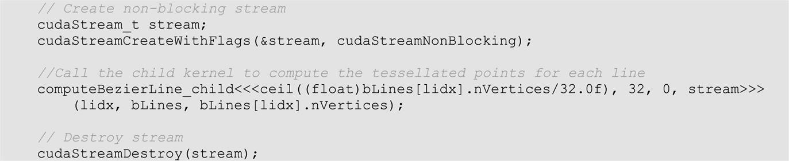
Kernels that are launched with dynamic parallelism may themselves call other kernels, which may in turn call other kernels, and so on. We saw an example of such a kernel in the quadtree application in Section 12.4. Each subordinate launch is considered a new nesting level, and the total number of levels that are reached is called the nesting depth. The maximum nesting depth supported by current hardware is 24 levels. For this reason, kernels such as the one in the quadtree example should check this limit before deciding whether to make a dynamic launch.
In the presence of parent-child synchronization there are additional constraints on the nesting depth due to the amount of memory required by the system to store the state of the parent grid. This constraint is referred to as the synchronization depth. We refer the reader to the CUDA C++ Programming Guide for more details about the nesting depth and synchronization depth (NVIDIA Corporation, 2021).
CUDA dynamic parallelism extends the CUDA programming model to allow kernels to call other kernels. This allows each thread to dynamically discover work and launch new grids according to the amount of work that is newly discovered. It also supports dynamic allocation of device memory by threads. As we showed in the Bezier curve calculation example, these extensions can lead to better work balance across threads and blocks as well as more efficient memory usage. CUDA Dynamic Parallelism also helps programmers to implement recursive algorithms, as the quadtree example shows.
Besides ensuring better work balance, dynamic parallelism offers many advantages in terms of programmability. However, it is important to keep in mind that launching grids with a small number of threads could lead to severe underutilization of the GPU resources. A general recommendation is launching child grids with many blocks, or at least blocks with many threads if the number of blocks is small.
Similarly, nested parallelism, which can be seen as a form of tree processing, provides higher performance when tree nodes are thick (that is, each node deploys many threads) and/or when the branch degree is large (i.e., each parent node has many children). As the nesting depth is limited in hardware, only relatively shallow trees can be implemented efficiently.
To use dynamic parallelism effectively, programmers need to understand details such as visibility of memory contents, pending launch count, and streams. Careful use of memory and streams between parents and children in dynamic parallelism is critical for the correct execution and achieving the expected level of parallelism in launching child grids.
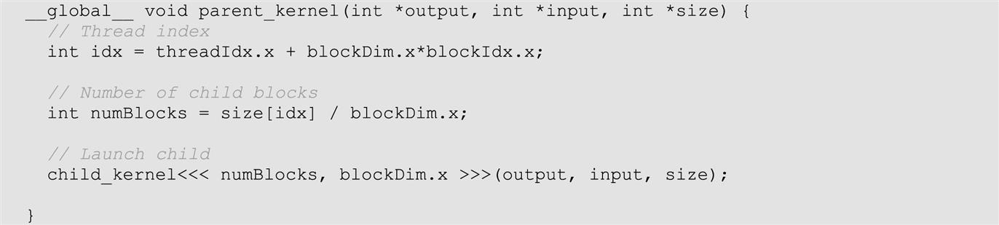
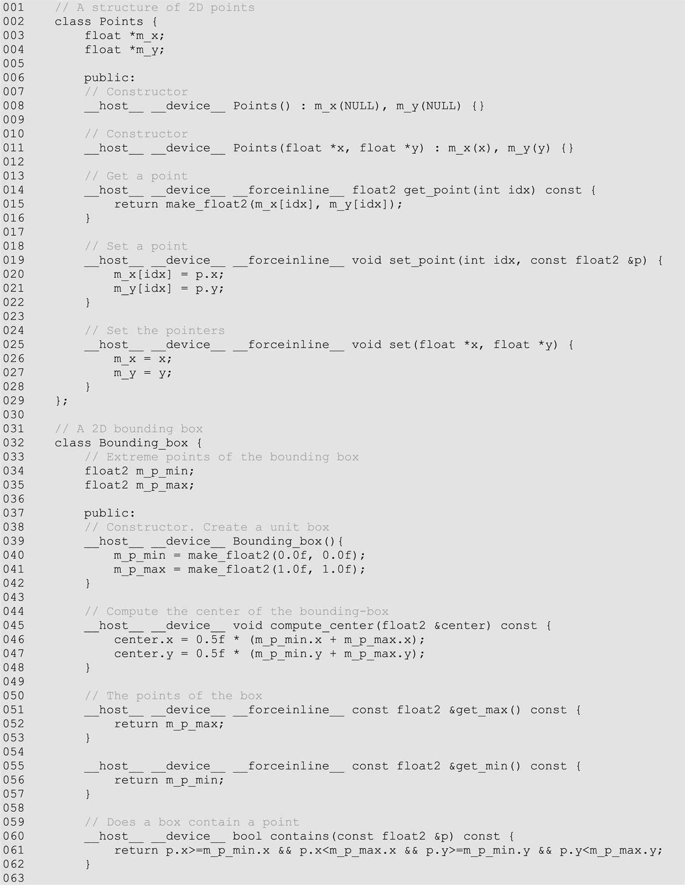
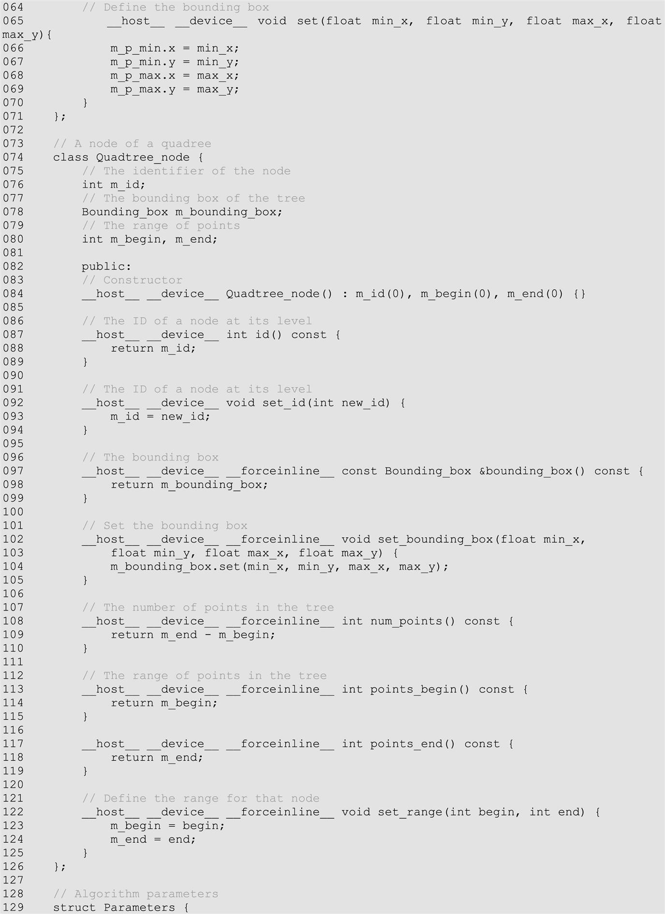
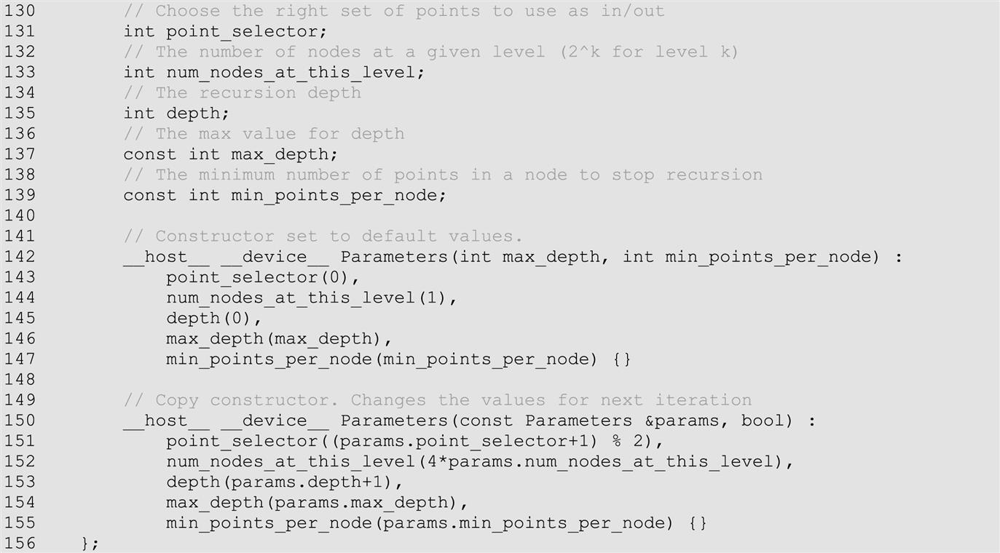